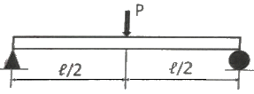
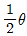
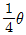
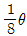
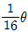
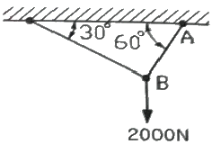
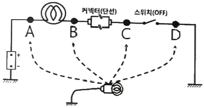
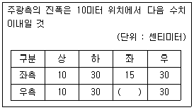

자동차정비산업기사 (2018-08-19 기출문제)
1과목: 일반기계공학
1. 다음 중 일반적인 플라스틱의 성질과 가장 거리가 먼 것은?
- 전기 절연성이 좋다.
- 단단하다 열에는 약하다.
- 무겁고 기계적 강도가 크다.
- 가공 및 성형성이 용이하다.
(정답률: 83%)

2. 탄소강의 열간가공과 냉간가공을 구분하는 온도는?
- 연성 온도
- 취성 온도
- 재결정 온도
- A1변태 온도
(정답률: 78%)
3. 다음 중 플렉시블 커플링의 특징으로 가장 거리가 먼 것은?
- 약간의 굽힙은 허용한다.
- 어느 정도의 진동에 견딜 수 있다.
- 축 중심이 일치하지 않을 때 사용한다.
- 마찰력으로 동력을 전달할 때 사용한다.
(정답률: 71%)
4. 다음 중 원의 중심 위치를 표시하는데 사용하는 공구로 적절한 것은?
- 톱
- 줄
- 리머
- 펀치
(정답률: 66%)
5. 그림과 같이 길이가 ℓ인 보에 집중하중 P가 작용할 때, 최대 굽힘모멘트는?

- Pℓ/4
- Pℓ2
- Pℓ2/2
- Pℓ/2
(정답률: 58%)
6. 비틀림이 발생하는 원형 단면봉의 직경을 2배로 증가시킬 때 비틀림 각은 어떻게 되는가?




(정답률: 49%)
7. 스폿 용접(spot welding)의 3대 요소가 아닌 것은?
- 가압력
- 열전도율
- 용접전류
- 통전시간
(정답률: 54%)
8. 비철합금의 설명으로 틀린 것은?
- 7:3 황동은 연신율이 크고 인장강도가 높다.
- 6:4 황동은 가공이 쉽고, 볼트, 너트, 밸브 등에 사용된다.
- 델타 메탈은 해수 등에 대한 내식성이 우수하다.
- 네이벌 황동은 6:4 황동에 1%의 Mn을 첨가한 것이다.
(정답률: 62%)
9. 마찰판의 수가 4인 다판 클러치에서 접촉면의 안지름 50mm, 바깥지름 90mm, 스러스트 하중 600N을 작용시킬 때, 토크는 몇 kNㆍmm인가? (단, 마찰계수는 μ = 0.3이다.)
- 25.2
- 252
- 2520
- 25200
(정답률: 37%)
10. 전동축에 전달하고자 하는 동력(H)을 2배로 증가시키면 이 축에 작용하는 비틀림 모멘트(T)의 크기는? (단, 회전수는 일정하다.)
- T
- 1/2T
- 2T
- 4T
(정답률: 57%)
11. 밀폐된 용기의 정지 유체에 가해진 압력이 모든 방향으로 균일하게 전달되는 원리는?
- 벤츄리의 원리
- 파스칼의 원리
- 베르누이의 원리
- 토리첼리의 원리
(정답률: 78%)
12. 다음 중 와셔의 사용 용도가 아닌 것은?
- 내압력이 낮은 고무면일 때 사용
- 너트에 맞지 않는 볼트일 때 사용
- 볼트 구멍이 볼트의 호칭용 규격보다 클 때
- 너트와 볼트의 머리 접촉면이 고르지 않을 때 사용
(정답률: 63%)
13. 구조물의 AB 부재에 작용하는 인장력은 약 몇 N인가?

- 1232
- 1309
- 1732
- 2309
(정답률: 62%)
14. 토크를 전달함과 동시에 보스를 축 방향으로 이동시킬 때 사용하는 키(key)는?
- 평키
- 안장키
- 페더키
- 접선키
(정답률: 56%)
15. 주조할 때 주형에 접한 표면을 급랭시켜 표면은 시멘타이트가 되게 하고, 내부는 서서히 냉각시켜 펄라이트가 되게 한 주철은?
- 백주철
- 회주철
- 칠드주철
- 가단주철
(정답률: 69%)
16. 원통형 케이싱 안에 편심 회전자가 있고 그 회전자의 홈 속에 판 모양의 깃이 원심력 또는 스프링 장력에 의하여 벽에 밀착되면서 회전하여 액체를 압송하는 펌프는?
- 베인펌프
- 기어펌프
- 나사펌프
- 피스톤펌프
(정답률: 71%)
17. 연삭숫돌의 구성 3요소가 아닌 것은?
- 조직
- 입자
- 기공
- 결합제
(정답률: 48%)
18. 유압 밸브 중 방향제어밸브로 옳은 것은?
- 감압 밸브
- 체크 밸브
- 릴리프 밸브
- 언로딩 밸브
(정답률: 63%)
19. 주형 주물사의 구비조건으로 옳지 않은 것은?
- 주물 표면에서 이탈이 용이할 것
- 가스 및 공기가 잘 빠지지 않을 것
- 내열성이 크고 화학적인 변화가 없을 것
- 반복 사용에 따른 형상 변화가 거의 없을 것
(정답률: 72%)
20. 6개가 합성된 겹판 스프링으로 각각의 폭 50mm, 두께 9mm, 스프링의 길이 600mm, 하중이 70N이면 최대응력은 약 몇 MPa인가?
- 13.25
- 10.37
- 7.89
- 5.75
(정답률: 44%)
2과목: 자동차엔진
21. 4행정 사이클 자동차엔진의 열역학적 사이클 분류로 틀린 것은?
- 클러크 사이클
- 디젤 사이클
- 사바테 사이클
- 오토 사이클
(정답률: 79%)
22. 전자제어 가솔린엔진에서 (-)duty 제어타입의 액추에이터 작동 사이클 중 (-)duty가 40%일 경우의 설명으로 옳은 것은?
- 전류 통전시간 비율이 40%이다.
- 전압 비통전시간 비율이 40%이다.
- 한 사이클 중 분사시간의 비율이 60%이다.
- 한 사이클 중 작동하는 시간의 비율이 60%이다.
(정답률: 64%)
23. LPG 자동차 봄베의 액상연료 최대 충전량은 내용적의 몇 %를 넘지 않아야 하는가?
- 75%
- 80%
- 85%
- 90%
(정답률: 67%)
24. 점화 1차 전압 파형으로 확인 할 수 없는 사항은?
- 드웰 시간
- 방전 전류
- 점화코일 공급 전압
- 점화플러그 방전 시간
(정답률: 53%)
25. 무부하검사방법으로 휘발유 사용 운행 자동차의 배출가스검사 시 측정 전에 확인해야 하는 자동차의 상태로 틀린 것은?
- 냉ㆍ난방 장치를 정지시킨다.
- 변속기를 중립 위치에 놓는다.
- 원동기를 정지시켜 충분히 냉각한다.
- 측정에 장애를 줄 수 있는 부속 장치들의 가동을 정지한다.
(정답률: 78%)
26. 전자 제어 가솔린엔진에 대한 설명으로 틀린 것은?
- 흡기온도 센서는 공기밀도 보정 시 사용된다.
- 공회전속도 제어에 스텝 모터를 사용하기도 한다.
- 산소 센서의 신호는 이론공연비 제어에 사용된다.
- 점화시기는 크랭크각 센서가 점화 2차 코일의 저항으로 제어한다.
(정답률: 67%)
27. 전자제어 디젤엔진의 연료분사장치에서 예비(파일럿)분사가 중단될 수 있는 경우로 틀린 것은?
- 연료분사량이 너무 작은 경우
- 연료압력이 최소압보다 높을 경우
- 규정된 엔진회전수를 초과하였을 경우
- 예비(파일럿)분사가 주분사를 너무 앞지르는 경우
(정답률: 52%)
28. 전자제어 가솔린엔진에서 인젝터의 연료 분사량을 결정하는 주요 인자로 옳은 것은?
- 분사 각도
- 솔레노이드 코일수
- 연료펌프 복귀 전류
- 니들밸브의 열림 시간
(정답률: 75%)
29. 엔진의 밸브 스프링이 진동을 일으켜 밸브 개폐시기가 불량해지는 현상은?
- 스텀블
- 서징
- 스털링
- 스트레치
(정답률: 79%)
30. 차량에서 발생되는 배출가스 중 지구 온난화에 가장 큰 영향을 미치는 것은?
- H2
- CO2
- O2
- HC
(정답률: 75%)
31. 엔진의 부하 및 회전속도의 변화에 따라 형성되는 흡입다기관의 압력변화를 측정하여 흡입공기량을 계측하는 센서는?
- MAP 센서
- 베인식 센서
- 핫 와이어식 센서
- 칼만 와류식 센서
(정답률: 75%)
32. 가솔린엔진의 연소실체적이 행정체적의 20%일 때 압축비는 얼마인가?
- 6 : 1
- 7 : 1
- 8 : 1
- 9 : 1
(정답률: 48%)
33. 엔진 오일을 점검하는 방법으로 틀린 것은?
- 엔진 정지 상태에서 오일량을 점검한다.
- 오일의 변색과 수분의 유입 여부를 점검한다.
- 엔진오일의 색상과 점도가 불량한 경우 보충한다.
- 오일량 게이지 F와 L사이에 위치하는지 확인한다.
(정답률: 76%)
34. 산소센서의 피드백 작용이 이루어지고 있는 운전 조건으로 옳은 것은?
- 시동 시
- 연료 차단 시
- 급 감속 시
- 통상 운전 시
(정답률: 72%)
35. 수냉식 엔진의 과열 원인으로 틀린 것은?
- 라디에이터 코어가 30% 막힌 경우
- 워터펌프 구동벨트의 장력이 큰 경우
- 수온조절기가 닫힌 상태로 고장 난 경우
- 워터재킷 내에 스케일이 많이 있는 경우
(정답률: 71%)
36. 전자제어 가솔린엔진에서 인젝터 연료분사압력을 항상 일정하게 조절하는 다이어프램 방식의 연료압력조절기 작동과 직접적인 관련이 있는 것은?
- 바퀴의 회전속도
- 흡입 매니폴드의 압력
- 실린더 내의 압축 압력
- 배기가스 중의 산소 농도
(정답률: 66%)
37. 가솔린 전자제어 연료분사장치에서 ECU로 입력되는 요소가 아닌 것은?
- 연료 분사 신호
- 대기 압력 신호
- 냉각수 온도 신호
- 흡입 공기 온도 신호
(정답률: 53%)
38. 엔진의 회전수가 4000rpm이고, 연소지연시간이 1/600초일 때 연소지연시간 동안 크랭크축의 회전각도로 옳은 것은?
- 28°
- 37°
- 40°
- 46°
(정답률: 47%)
39. 엔진의 연소실 체적이 행정 체적의 20%일 때 오토 사이클의 열효율은 약 몇 %인가? (단, 비열비 k = 1.4)
- 51.2
- 56.4
- 60.3
- 65.9
(정답률: 36%)
40. 운행차 정기검사에서 가솔린 승용자동차의 배출가스검사 결과 CO 측정값이 2.2%로 나온 경우, 검사 결과에 대한 판정으로 옳은 것은? (단, 2007년 11월 제작된 차량이며, 무부하 검사방법으로 측정하였다.)
- 허용기준인 1.0%를 초과하였으므로 부적합
- 허용기준인 1.5%를 초과하였으므로 부적합
- 허용기준인 2.5%를 이하이므로 적합
- 허용기준인 3.2%를 이하이므로 적합
(정답률: 63%)
3과목: 자동차섀시
41. 4륜 조향장치(4 wheel steering system)의 장점으로 틀린 것은?
- 선회 안정성이 좋다.
- 최소 회전 반경이 크다.
- 견인력(휠 구동력)이 크다.
- 미끄러운 노면에서의 주행 안정성이 좋다.
(정답률: 77%)
42. 6속 더블 클러치 변속기(DCT)의 주요 구성품이 아닌 것은?
- 토크 컨버터
- 더블 클러치
- 기어 액추에이터
- 클러치 액추에이터
(정답률: 64%)
43. 96km/h로 주행 중인 자동차의 제동을 위한 공주시간이 0.3초일 때 공주거리는 몇 m인가?
- 2
- 4
- 8
- 12
(정답률: 55%)
44. 브레이크 액의 구비조건이 아닌 것은?
- 압축성일 것
- 비등점이 높을 것
- 온도에 의한 변화가 적을 것
- 고온에서의 안정성이 높을 것
(정답률: 69%)
45. ABS 장치에서 펌프로부터 발생된 유압을 일시적으로 저장하고 맥동을 안정시켜 주는 부품은?
- 모듈레이터
- 아웃-렛 밸브
- 어큐물레이터
- 솔레노이드 밸브
(정답률: 76%)
46. 전동식 동력조향장치의 자기진단이 안 될 경우 점검사항으로 틀린 것은?
- CAN 통신 파형 점검
- 컨트롤유닛 측 배터리 전원 측정
- 컨트롤유닛 측 배터리 접지 여부 점검
- KEY ON상태에서 CAN 종단저항 측정
(정답률: 62%)
47. 전자제어 현가장치(ECS)의 감쇠력 제어 모드에 해당되지 않는 것은?
- Hard
- Soft
- Super Soft
- Height Control
(정답률: 68%)
48. 차량의 주행 성능 및 안정성을 높이기 위한 방법에 관한 설명 중 틀린 것은?
- 유선형 차체형상으로 공기저항을 줄인다.
- 고속 주행 시 언더 스티어링 차량이 유리하다.
- 액티브 요잉 제어장치로 안정성을 높일 수 있다.
- 리어 스포일러를 부착하여 횡력의 영향을 줄인다.
(정답률: 56%)
49. 엔진이 2000rpm일 때 발생한 토크 60kgfㆍm가 클러치를 거쳐, 변속기로 입력된 회전수와 토크가 1900rpm, 56kgfㆍm이다. 이때 클러치의 전달효율은 약 몇 %인가?
- 47.28
- 62.34
- 88.67
- 93.84
(정답률: 48%)
50. 자동변속기 차량의 셀렉트 레버 조작 시 브레이크 페달을 밟아야만 레버 위치를 변경할 수 있도록 제한하는 구성품으로 나열된 것은?
- 파킹 리버스 블록 밸브, 시프트록 케이블
- 시프트록 케이블, 시프트록 솔레노이드 밸브
- 시프트록 솔레노이드 밸브, 스타트록 아웃
- 스타트 록 아웃 스위치, 파킹 리버스 블록 밸브
(정답률: 64%)
51. 레이디얼 타이어의 특징에 대한 설명으로 틀린 것은?
- 하중에 의한 트레드 변형이 큰 편이다.
- 타이어 단면의 편평율을 크게 할 수 있다.
- 로드 홀딩이 우수하며 스탠딩 웨이브가 잘 일어나지 않는다.
- 선회 시에 트레드의 변형이 적어 접지 면적이 감소되는 경향이 적다.
(정답률: 68%)
52. 유체클러치와 토크컨버터에 대한 설명 중 틀린 것은?
- 토크컨버터에는 스테이터가 있다.
- 토크컨버터는 토크를 증가시킬 수 있다.
- 유체클러치는 펌프, 터빈, 가이드링으로 구성되어 있다.
- 가이드링은 유체클러치 내부의 압력을 증가시키는 역할을 한다.
(정답률: 64%)
53. 자동변속기에서 급히 가속페달을 밟았을 때, 일정속도 범위 내에서 한단 낮은 단으로 강제 변속이 되도록 하는 것은?
- 킥 업
- 킥 다운
- 업 시프트
- 리프트 풋 업
(정답률: 83%)
54. 조향장치에 관한 설명으로 틀린 것은?
- 방향 전환을 원활하게 한다.
- 선회 후 복원성을 좋게 한다.
- 조향핸들의 회전과 바퀴의 선회 차이가 크지 않아야 한다.
- 조향핸들의 조작력을 저속에서는 무겁게, 고속에서는 가볍게 한다.
(정답률: 81%)
55. 동력 조향장치에서 3가지 주요부의 구성으로 옳은 것은?
- 작동부 - 오일펌프, 동력부 - 동력실린더, 제어부 - 제어밸브
- 작동부 - 제어밸브, 동력부 - 오일펌프, 제어부 - 동력실린더
- 작동부 - 동력실린더, 동력부 - 제어밸브, 제어부 - 오일펌프
- 작동부 - 동력실린더, 동력부 - 오일펌프, 제어부 - 제어밸브
(정답률: 56%)
56. 구동륜 제어 장치(TCS)에 대한 설명으로 틀린 것은?
- 차체 높이 제어를 위한 성능 유지
- 눈길, 빙판길에서 미끄러짐을 방지
- 커브 길 선회 시 주행 안정성 유지
- 노면과 차륜간의 마찰 상태에 따라 엔진 출력 제어
(정답률: 61%)
57. 수동변속기에서 기어변속이 불량한 원인이 아닌 것은?
- 릴리스 실린더가 파손된 경우
- 컨트롤 케이블이 단선된 경우
- 싱크로나이저 링의 내부가 마모된 경우
- 싱크로나이저 슬리브와 링의 회전속도가 동일한 경우
(정답률: 68%)
58. 휠 얼라인먼트를 점검하여 바르게 유지해야 하는 이유로 틀린 것은?
- 직진성의 개선
- 축간 거리의 감소
- 사이드 슬립의 방지
- 타이어 이상 마모의 최소화
(정답률: 75%)
59. 종감속장치에서 구동피니언의 잇수가 8, 링기어의 잇수가 40이다. 추진축이 1200rpm일 때 왼쪽 바퀴가 180rpm으로 회전하고 있다. 이 때 오른쪽 바퀴의 회전수는 몇 rpm인가?
- 200
- 300
- 600
- 800
(정답률: 54%)
60. 브레이크 회로 내의 오일이 비등ㆍ기화하여 제동압력의 전달작용을 방해하는 현상은?
- 페이드 현상
- 사이클링 현상
- 베이퍼록 현상
- 브레이크록 현상
(정답률: 72%)
4과목: 자동차전기
61. 점화플러그에 대한 설명으로 틀린 것은?
- 열형플러그는 열방산이 나쁘며 온도가 상승하기 쉽다.
- 열가는 점화플러그의 열방산 정도를 수치로 나타내는 것이다.
- 고부하 및 고속회전의 엔진은 열형플러그를 사용하는 것이 좋다.
- 전극 부분의 작동온도가 자기청정온도보다 낮을 때 실화가 발생할 수 있다.
(정답률: 62%)
62. 그림과 같은 회로에서 스위치가 OFF되어 있는 상태로 커넥터가 단선되었다. 이 회로를 테스트 램프로 점검하였을 때 테스트 램프의 점등상태로 옳은 것은?

- A : OFF, B : ON, C : OFF, D : OFF
- A : ON, B : OFF, C : OFF, D : OFF
- A : ON, B : ON, C : OFF, D : OFF
- A : ON, B : ON, C : ON, D : OFF
(정답률: 75%)
63. 점화장치에서 파워TR(트랜지스터)의 B(베이스)전류가 단속될 때 점화코일에서는 어떤 현상이 발생하는가?
- 1차 코일에 전류가 단속된다.
- 2차 코일에 전류가 단속된다.
- 2차 코일에 역기전력이 형성된다.
- 1차 코일에 상호유도작용이 발생한다.
(정답률: 63%)
64. 물체의 전기저항 특성에 대한 설명 중 틀린 것은?
- 단면적인 증가하면 저항은 감소한다.
- 도체의 저항은 온도에 따라서 변한다.
- 보통의 금속은 온도상승에 따라 저항이 감소된다.
- 온도가 상승하면 전기저항이 감소하는 소자를 부특성 서미스터(NTC)라 한다.
(정답률: 56%)
65. 기동전동기에 흐르는 전류가 160A이고, 전압이 12V일 때 기동전동기의 출력은 약 몇 PS인가?
- 1.3
- 2.6
- 3.9
- 5.2
(정답률: 54%)
66. 하이브리드 자동차의 고전압 배터리 관리 시스템에서 셀 밸런싱 제어의 목적은?
- 배터리의 적정 온도 유지
- 상황별 입출력 에너지 제한
- 배터리 수명 및 에너지 효율 증대
- 고전압 계통 고장에 의한 안전사고 예방
(정답률: 69%)
67. 논리회로 중 NOR회로에 대한 설명으로 틀린 것은?
- 논리합회로에 부정회로를 연결한 것이다.
- 입력 A와 입력 B가 모두 0이면 출력이 1이다.
- 입력 A와 입력 B가 모두 1이면 출력이 0이다.
- 입력 A 또는 입력 B 중에서 1개가 1이면 출력이 1이다.
(정답률: 65%)
68. 단위로 cd(칸델라)를 사용하는 것은?
- 광원
- 광속
- 광도
- 조도
(정답률: 75%)
69. 4행정 사이클 가솔린엔진에서 점화 후 최고 압력에 도달할 때까지 1/400초가 소요된다. 2100rpm으로 운전될 때의 점화시기는? (단, 최고 폭발압력에 도달하는 시기는 ATDC 10℃이다.)
- BTDC 19.5℃
- BTDC 21.5℃
- BTDC 23.5℃
- BTDC 25.5℃
(정답률: 54%)
70. 자동차 정기검사에서의 전조등 광도측정 기준이다. ( ) 안에 알맞은 것은?

- 10
- 15
- 30
- 45
(정답률: 73%)
71. 조수석 전방 미등은 작동되나 후방만 작동되지 않는 경우의 고장 원인으로 옳은 것은?
- 미등 퓨즈 단선
- 후방 미등 전구 단선
- 미등 스위치 접촉 불량
- 미등 릴레이 코일 단선
(정답률: 78%)
72. 전류의 3대 작용으로 옳은 것은?
- 발열작용, 화학작용, 자기작용
- 물리작용, 화학작용, 자기작용
- 저장작용, 유도작용, 자기작용
- 발열작용, 유도작용, 증폭작용
(정답률: 74%)
73. 자동 전조등에서 외부 빛의 밝기를 감지하여 자동으로 미등 및 전조등을 점등시키기 위해 적용된 센서는?
- 조도 센서
- 초음파 센서
- 중력(G) 센서
- 조향 각속도 센서
(정답률: 82%)
74. 발전기 B단자의 접촉불량 및 배선 저항과다로 발생할 수 있는 현상은?
- 엔진 과열
- 충전 시 소음
- B단자 배선 발열
- 과충전으로 인한 배터리 손상
(정답률: 71%)
75. 자동차 전자제어 에어컨시스템에서 제어모듈의 입력요소가 아닌 것은?
- 산소센서
- 외기온도센서
- 일사량센서
- 증발기온도센서
(정답률: 68%)
76. 발광 다이오드에 대한 설명으로 틀린 것은?
- 응답속도가 느리다.
- 백열전구에 비해 수명이 길다.
- 전기적 에너지를 빛으로 변환시킨다.
- 자동차의 차속센서, 차고센서 등에 적용되어 있다.
(정답률: 72%)
77. 주행 중인 하이브리드 자동차에서 제동 및 감속 시 충전불량 현상이 발생하였을 때 점검이 필요한 곳은?
- 회생제동 장치
- LDC 제어 장치
- 발전 제어 장치
- 12V용 충전 장치
(정답률: 79%)
78. 하이브리드 차량 정비 시 고전압 차단을 위해 안전 플러그(세이프티 플러그)를 제거한 후 고전압 부품을 취급하기 전 일정시간 이상 대기시간을 갖는 이유로 가장 적절한 것은?
- 고전압 배터리 내의 셀의 안정화
- 제어모듈 내부의 메모리 공간의 확보
- 저전압(12V) 배터리에 서지 전압 차단
- 인버터 내 콘덴서에 충전되어 있는 고전압 방전
(정답률: 68%)
79. 바디 컨트롤 모듈(BCM)에서 타이머 제어를 하지 않는 것은?
- 파워 윈도우
- 후진등
- 감광 룸램프
- 뒤 유리 열선
(정답률: 64%)
80. 자동차에 직류 발전기보다 교류 발전기를 많이 사용하는 이유로 틀린 것은?
- 크기가 작고 가볍다.
- 정류자에서 불꽃 발생이 크다.
- 내구성이 뛰어나고 공회전이나 저속에도 충전이 가능하다.
- 출력 전류의 제어작용을 하고 조정기 구조가 간단하다.
(정답률: 67%)